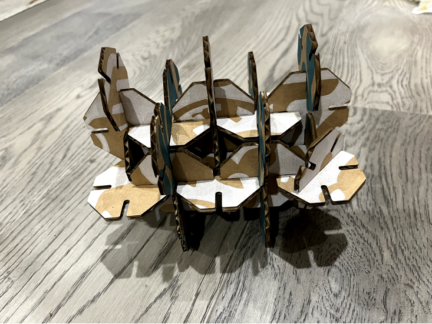
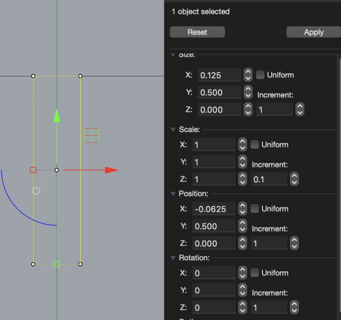
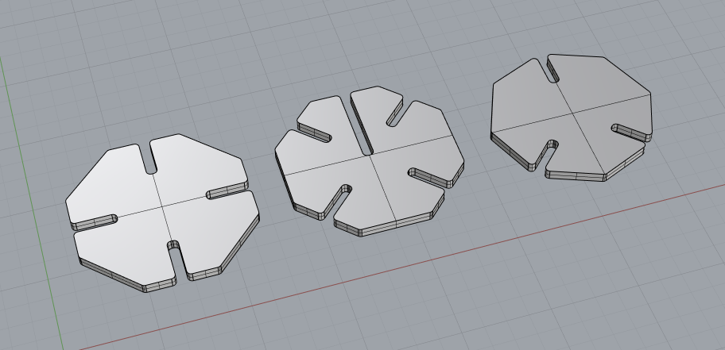
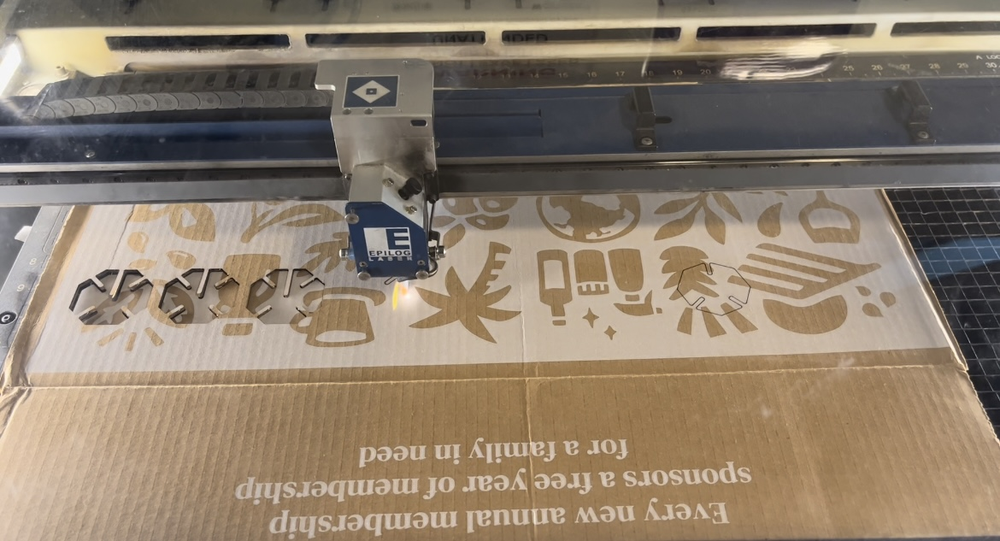

Here is my finished press fit construction kit.

I started by making some paper prototypes using thin cardboard and letter paper to cut some triangles,
squares, pentagons, and hexagons with several different slots to get some inspiration.
I found octagons could make more styles and iterations. Once I decided on the shapes and slots,
I measured the cardboard thickness, which I chose 0.125 inches, and the cardboard size is 24inch x 12inch.

I chose the octagon 2 inches in diameter, and I set the width of the slot to 0.125 inches
to ensure the pieces fit snugly with each other and set the height to 0.5 inches to ensure the pieces inserted from opposite
sides could be touched without a gap.

On the laser cutter, I used the following settings: speed 25, power 100, freq 50.
